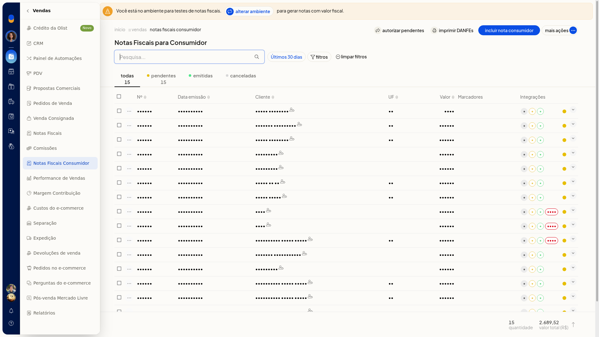
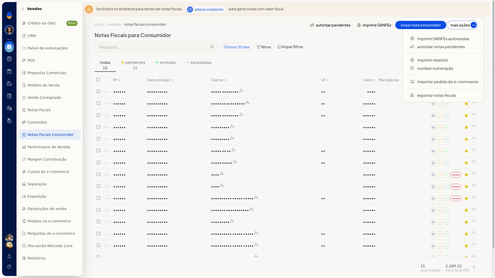
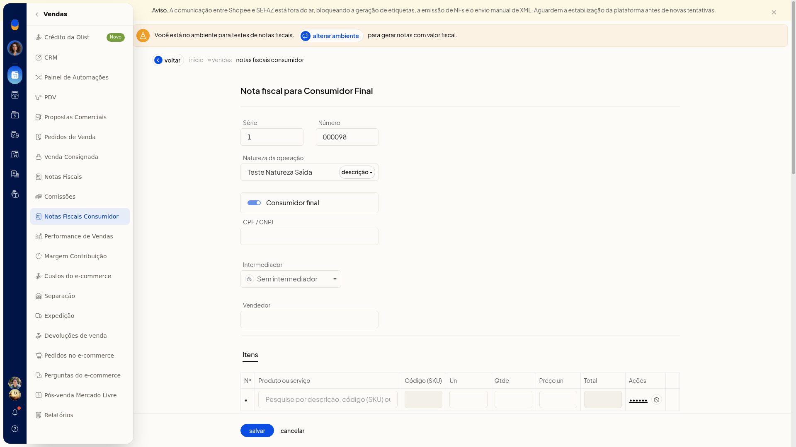
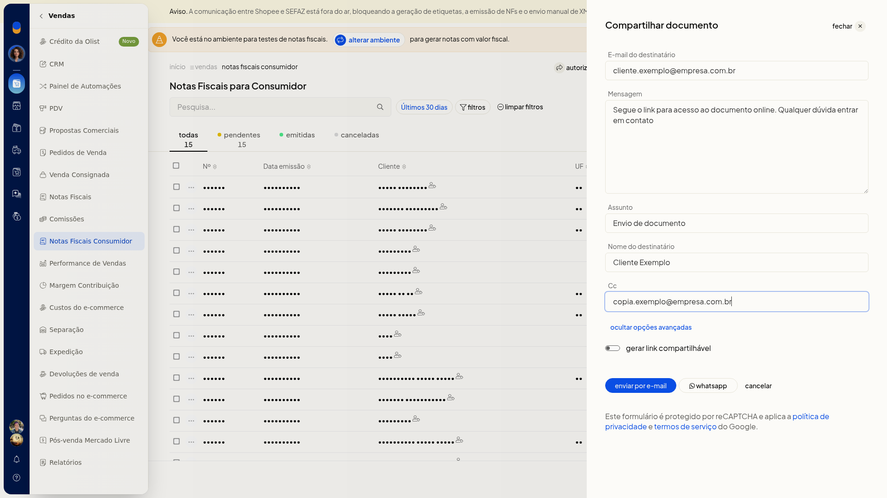
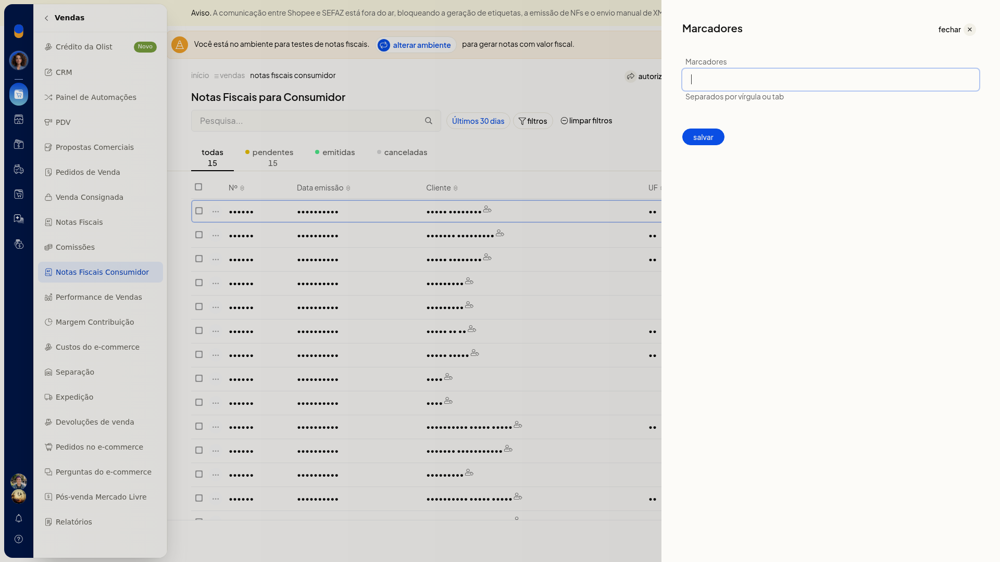

Notas Fiscais Consumidor: lista e ações
Importante
- A lista pode exibir um aviso de ambiente de testes fiscais.
Instruções
Consultar a lista por situação
- Acesse Vendas > Notas Fiscais Consumidor.

- Use as abas Todas, Pendentes, Emitidas e Canceladas. A aba Pendentes mostra a contagem.
Usar as ações do topo
- No topo da lista, use Autorizar pendentes, Imprimir DANFEs ou Incluir nota consumidor.
- Abra Mais ações para Imprimir DANFEs autorizadas, Autorizar notas pendentes, Imprimir relatório, Inutilizar numeração, Importar pedido do e-commerce e Exportar.

Abrir a inclusão da nota
- Clique em Incluir nota consumidor.

- Confira a Série, o Número e a Natureza da operação, que já vêm preenchidos. Consumidor final inicia ligado e o intermediador mostra Sem intermediador.
Importar pedido do ecommerce
- Abra Mais ações.
- Clique em Importar pedido do e-commerce. A busca de pedido abre para você localizar o pedido antes de importar.
Exportar notas
- Abra Mais ações.
- Clique em Exportar e escolha XML ou planilha.
Compartilhar uma nota
- No menu da linha, abra o compartilhamento.
- Informe o email. No modo avançado, preencha Assunto, Nome do destinatário e Cc.

Incluir marcadores
- No menu da linha, clique em Marcadores.

- Digite as tags. A ajuda da tela indica Separados por vírgula ou tab. As tags aparecem como chips.
- Clique em Salvar e fechar para gravar. Se fechar sem Salvar, os chips somem.
Abrir o rastreio
- No menu da linha, abra o rastreio. O formulário de rastreio da nota abre para preenchimento.
O menu da linha também traz Outras Opções.
Resultado
A lista separa as NFC-e em Todas, Pendentes, Emitidas e Canceladas. A partir dela ficam disponíveis a inclusão, a importação, a exportação, o compartilhamento, os marcadores e o rastreio.
Informações adicionais
- Marcadores digitados aparecem como chips e são descartados se o painel for fechado sem Salvar.